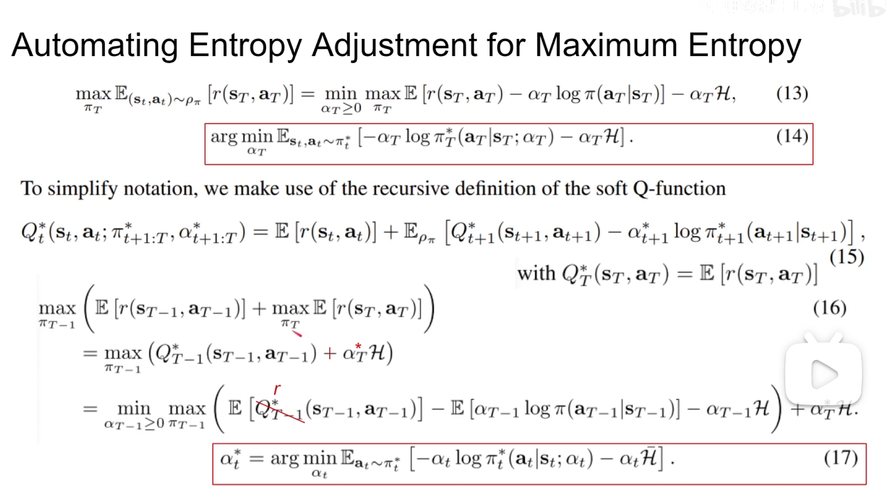

SAC
SAC
detect0530@gmail.com
Problem to be solved
- policy梯度那里，Z为什么能忽略。以及梯度加法那里。(泛函杀我)
- SQL数学上和SAC区别
SAC’s background
SAC主要解决的是连续动作空间的控制问题，在我们一探SAC究竟之前，让我们先回顾SAC之前解决连续动作控制问题的两个主流算法：DDPG，PPO。
DDPG
DDPG是基于DPG(Deterministic Policy Gradient)的算法，我们接着先从DPG说起。
DPG
-
引入AC(actor - critic)框架，让值函数直接指导策略优化。这里有必要提一下，是因为DPG与之前的PG算法有本质的不同：
过去的PG算法使用累计收益（需要真的去模拟，做蒙特卡洛估计）作为目标，调整策略以追求更高的收益。
而DPG则是利用critic(Q函数)找到可能得最优策略，随后直接依靠Q值去优化策略函数，也就是说策略的调整完全不用依靠实际收益。 -
DPG的核心公式：
利用critic直接优化actor，上述公式利用Q值调整策略函数；Q值则用TD-error类似Q-learning的方式更新。
依靠Q值寻找最优策略:
对于状态s，我们要做的是调整a，找到一个最优的动作使得最大，这里是动作连续情况，可以对a求导的。
优化当前策略：
我们有了最优动作，只需要让policy network做出的决策和我们预测的最优解尽可能对齐即可。
- DPG杂谈：
- 实际上根据上述核心式子，策略选择和策略优化可以在一个式子里体现。最初的时候，actor和critic都很拉胯，但是随着actor与环境交互的进行，critic经过和TD-error的对齐训练逐渐准确，actor也会根据critic提供的值函数逐渐向最优策略靠拢。
- 在为policy network更新时，
需要$\theta对动作a的导数，所以DPG要求动作空间连续。（反过来说明DPG不适用于动作空间离散的任务）
- 纵观DPG流程，其实critic才是核心core，策略的好坏（actor）完全取决于critic的值函数是否估得准确，导致整个DPG算法实际与value-based算法更加接近。这为DPG带来一个优势：可以更好的利用过去的数据，也即可以支持off-policy，因为critic自然可以更多地利用过去的数据）
好了，聊完了DPG，我们回过头看看包括DDPG在内的几种衍生做法：
- DDPG: 加上了几个小技巧，比如target network，replay buffer等，使得DDPG更加稳定，更容易收敛。
- D4PG：引入分布式的critic，并使用多个actor（learner）共同与环境交互）
- TD3：（参考了double Q-learning的思想来优化critic，延缓actor的更新，计算critic的优化目标时在action上加一个小扰动）
PPO(Proximal Policy Optimization)
PPO是TRPO(Trust Region Policy Optimization)的简化改进版，二者的共同目标都是：在PG算法优化过程中，使性能单调上升，并且使上升幅度尽可能大。
PPO同样是AC框架，不过比起DPG更接近传统的PG算法，智能体agent每次决策时都要从策略函数输出的分布中采样，得到的样本作为最终执行的动作，因此天生具备了一定的探测环境能力，不需要像DDPG为了探索环境主动给决策加上扰动。与DPG家族不同的是，PPO重心放在actor上，仅仅将critic作为预测状态期望收益的工具，策略的调整基于获取的收益，而不是critic的导数。（这一点很关键，需要细细评味）
-
PPO具体的流程可以参考我的另一篇PPO_blog。
-
也可以参考这个截图：
-
PPO杂谈：
- PPO与原始PG算法不同在于，每次策略参数迭代都朝着优化的方向改进，同时将策略变化限定在一定范围以内。（反之更新后策略崩溃，提高稳定性）
- 引入importance sampling技巧，成为一定程度上的off-policy算法。（on-policy对数据依赖很严重，每次更新都需要和环境进行新的交互）
- 引入AC框架，可以用critic代替蒙特卡洛实际去和环境交互计算return。同时可以利用critic计算advantage优势函数。
- 使用GAE，replay buffer等技巧，使得PPO更加稳定，更容易收敛。
- 严格约数policy参数更新速度，使策略表现尽可能单调。
主流算法的缺陷
- PPO：PPO必须保证importance sampling实现的off-policy与实际环境交互policy差异不会过大，否则，过去的数据不能再被利用，这样的off-policy其实是半吊子，所以PPO在sample efficiency 这条指标上并不算好。
- DDPG: DDPG对各种超参数十分敏感，所以DDPG在各种指标上的亮眼成绩有精雕细琢的嫌疑。泛化性能堪忧。
SAC
为了解决上述经典算法的问题，Tuomas Haarnoja 提出了他的SAC算法，接下来我们正式引入主角SAC。SAC是基于最大熵（maximum entropy）这一思想发展的RL算法，其采用与PPO类似的随机分布式策略函数（Stochastic Policy），并且是一个off-policy，actor-critic算法，与其他RL算法最为不同的地方在于，SAC在优化策略以获取更高累计收益的同时，也会最大化策略的熵。SAC在各种常用的benchmark以及真实的机器人控制任务中性能优秀，而且表现稳定，具有极强的抗干扰能力，是2018年强化学习领域的巨大突破。
为了更好的引入SAC，接下来会介绍一些前置知识，包括SAC由来的一步步过程。
熵
熵越大，代表混乱程度越高，不严谨地说，熵越大，代表策略越随机，这样agent可以更充分地探索状态空间，避免策略早早陷入local optimum，并且可以探索到多个可行方案来完成任务，提高鲁棒性。
引入熵最大化的RL算法的目标策略：
这里是策略下的状态动作对所服从的分布。是温度系数的超参数，用于调整对熵值的重视程度。
乍一看，就是给奖励后面加了一个正则熵值项，
不过，MERL的优化目标不只是灵机一动地给原本的RL目标加上一个正则化项，这个优化目标可以从概率图模型（Probabilistic Graphic Model）推出，感兴趣的读者可以参考SVI。
而SAC的作者则表示这个思路源于统计建模中的最大熵方法，最大熵模型的好处是：模型在匹配观察到的信息时，对未知的假设最少。
------此处有两个链接
Soft Value Function and Energy Based Policy
由于我们的优化目标变了，在MERL(Maximum Entropy Reinforcement Learning)中我们也有自成一派的值函数，用于评价策略和状态的好坏。
- Soft Value Function:
不难注意到soft Q和soft V之间存在关系：
(其实上式就是SAC中V函数的值迭代公式)
Energy Based Policy(EBP)
SAC的前身Soft Q-Learning
SAC
前文提出了MERL的基本理论，并引出了SAC的前身Soft Q-Learning，不过我们也可以看出其实现困难，最终的实现也是理论上soft Q-learning的近似。后来 Tuomas 改进优化了SQL，提出了SAC算法。
Soft Policy Evaluation
Soft Q-Learning中我们需要对V函数的值用softmax积分去算，这一步很难，我们采用迭代的思想规避这个问题。
如果SAC中我们只打算维护一个值函数Q，就把下式代入，只用Q值函数迭代；如果想维护两个值函数Q和V，那就用这两个式子进行迭代。。
这里的s是从经验池D中取的，存放的是同轨策略分布的样本。
用这两个式子反复迭代，可以得到近似的策略评估（值函数）。
Soft Policy Improvement
SAC中的理想策略依然是EBP形式
，不过由于EBP无法采样的问题依然存在，所以只能用一个高斯分布来代替EBP与环境交互，随后策略优化时我们期望这个高斯分布尽可能接近EBP。
于是很直观的，我们用KL-divergence来度量和EBP之间的距离，并优化缩小这个距离：
解释一下，表示我们可选的策略集合，本质上就是带参数的高斯分布的集合。是归一化因子，用于保证是一个概率分布，不过对于策略函数来说，这一部分是常数，在实际计算时可以忽略不计。（论文里补充说明）
所以实际上SAC不用再维护V函数？
Soft Policy Iteration
就像绝大多数RL算法一样，算法交替执行Soft Policy Evaluation和Soft Policy Improvement，直到值函数和最优策略收敛，这一过程被称作Soft Policy Iteration。
SAC的实现
根据上面的解说，SAC在实际实现时，值函数和策略函数分别用两个网络和组成。值函数输出Q值，策略函数输出action的分布（均值和方差），需要一个高斯分布时再进行一次采样，具体的采样结果作为策略的决策动作。
-
Q值训练的损失函数：
训练Q时，数据是从agent过往与环境交互产生的数据（replay buffer）中取出，但是是从临时策略中采集出来的，这样才是合乎我们定义（Q是策略期望汇报），无偏的估计。
-
策略的损失函数：
- Z此时由上一个版本的值确定的，是确定的，只有a是由我们要argmin的决定的，所以我们需要从采样a，同时Z的值相当于变成常数，我们可以忽略。#QQQQQQQQQQQQQQQQ
- 因为，实际操作时我们不能真的去抽样，因为抽样无法backpropagation，所以我们用reparameterization trick，即从一个固定的高斯分布中采样，然后通过一个线性变换得到最终的action：
其实就是有固定的mean和std，让后再随便抽一个随机数从而“确定性”的构造一个随机抽样结果，这样反向传播时的路是通畅的。
于是最后： $$J_{\pi}(\phi)=\mathbb{E}_{s_t \sim D, \epsilon \sim N}[\log \pi_\phi(f_\phi(\epsilon_t;s_t),s_t)-\frac{1}{\alpha}Q_\theta(s_t,f_\phi(\epsilon_t;s_t))]$$
最后只要不断收集数据，缩小这两个损失函数，就可以迭代收敛到解。
这里再提一下梯度的事：
我没有理解梯度加法那个地方。#QQQQQQQQQQQQQQQ
SAC 杂谈
一些插件
SAC中依然可以用许多常见的trick，比如double Q network，target network等。
Automating Entropy Adjustment for MERL
这是一个重要改进，有助于SAC稳定。在自动调整温度系数方法之前，作者表示要同时维护V和Q两个值函数，为了让训练更加稳定。但是此方法引入后缓解了这个问题，于是只保留了必要的Q值估计。
参数之前作为一个hyperparameter控制MERL对熵的重视程度。但是不同的学习任务，甚至与同一训练任务的不同时期，都有自己合适的。我们自然希望这个关键参数可以让SAC自动调节。
作者构造了一个带约数的优化问题：最大化期望收益，同时保持策略熵大于一个阈值。
现在变成：
这里做一些解释：
这里策略的下标是指我们在程序里每一个step，每一个step策略都会更新一波，我们希望也能随之更新，我们把给熵项顶一个shreshold，希望实际的熵总是大于这个shreshold，这样我们就可以保证策略的探索性。
接下来从那一推max的式子由里往外推，并使用对偶性加入拉格朗日项从而把熵限制条件去除。这里作者称满足convex所以是强对偶，所以min，max可以互换，于是最优的可以通过最小化一个函数得到，这个函数里的策略函数也是当前最优的。这个公式里最优的是怎么来的呢？是我们确定了后，网络迭代出的（与的值绑定）,所以最后直接优化最后一行的式子就可以了。
更进一步的，不只是最内层的max满足上式，对于所有时刻的和与之绑定的最后优化的式子都是同构的，所以在程序里每执行一次step，然后更新策略，最后更新，这样就可以自动调节了。（实际实现中，对应的来自上一轮更新的，为了节省再抽样的时间，因为整个过程是迭代的，所以这样做也是可以的）
最后经验之谈，我们设定为。(注意，连续动作空间用pdf积分出来的熵没有上下界，完全可以为负值)
一些杂谈
1. Model-free算法采样难度大，不易收敛
2. 限制model-free算法面向真实task的主要原因
- 采样复杂度大，效率低（on-policy最是这样，off-policy可以反复利用数据，稍微缓解）
- 难以调节超参数导致的收敛问题。
- off-policy还有稳定性差，容易发散问题，需要大量数据，特别是在连续空间上。（TD3等一系列优化off-policy方法都是为了解决这个问题，比如制定了延迟更新，策略平滑等）
- 超参数敏感，对不同task难以泛化
3. SAC同时兼顾采样效率和稳定性。
- SAC 是off-policy
- SAC采用最大含熵目标作为优化对象。以前，对每一个step都只有奖励，现在多一个，这种做法直接增加了算法的探索性和鲁棒性。对策略的挖掘（不容易陷于局部最优），以及对噪音的鲁棒性（有噪音时我还是有机会做其他动作），从而不会让agent轻易失效。
- SAC的off-policy让其sample变得高效，其最大化含熵性又让SAC稳定且有探索性。
4. 随机策略的好处
- 探索能力强。一方面从SQL中我们已经证明这种含熵目标的最优解是一种波尔茨曼分布函数，这种分布是一种概率分布，所以满足随机性。另一方面个人认为熵项可以看成正则化项，使得输出动作随机性增加，而不只是确定性动作。
- 在一些RL的task中，可能会有多个比较好的动作，随机性的策略会使得这些动作都能被选择到，而不像确定性策略，只能选一个固定的。
- 提升优化速度。作者发现优化含熵目标比优化标准目标更加快速。
- 当然还有其他好处，比如适合于多模式任务、可以作为另一个任务的初始化、鲁棒性等。
5. SQL与SAC的区别
- 基于Q-learning的SQL算法直接学习得到最优Q函数，然后得到最优策略。这是value-based的思想，先求出值函数，然后更具值函数求出策略，比如贪心策略。
- SAC则类似策略梯度上升，直接更新策略。这是policy-based的思想，直接对策略进行梯度上升进行更新。
6. 策略评估准确性证明
- 其实不同点就是引入了熵项，代入式子还是dp转移式子，最后收敛时一定是最优解。
7. 策略提升
- 我们还需要证明Energy-based policy确实可以像之前的greedy或者策略一样，使得每一个step后，策略一定更优，即。
- 首先SQL告诉我们Energy-based policy是最大含熵目标的最优解，Energy-based policy具体为:
在这个问题中，视作Q值。
- 而我们的最优解是：
实际上这个最优解就是上面那个Energy-based Policy。
但是我们直接利用Energy-based函数方便是方便，但是之后需要从这个分布中抽样时就g了。所以我们曲线救国，还是用高斯参数的分布作为数簇，用神经网络调整高斯参数去逼近这个Energy-based Policy。虽然自然想到就用KL散度去衡量，但是有趣的是从KL散度的数学公式可以推出，只要KL散度梯度下降成功，那么新策略一定更优。
8. 策略迭代
- 现在我们有了策略评估和策略更新，即是广义策略迭代了，那么不断迭代下去理论上就可以收敛。
9. 过估计问题
作者为了缓解Q值过估计，使用两个Q网络，每次取两者较小的那个加入到V和的训练中。（注意两个Q自己是同时训练的，只是用谁的值去更新其他网络不同而已）
我们在对策略梯度上升时，会让策略停在使Q值较大的位置上,从而当Q值自迭代时会往高了估，同时如果估值有波动，自举的迭代形式会进一步恶化。所以我们需要双Q和target network。
10.Q网络和网络
- 都是采用随机梯度优化方式，没有采用SVGD。
- target network采用软更新(Exponentially moving average)。
- SAC采用AC框架，两个网络互相依赖，谁也离不开谁。
11. 随机性策略
- 避免过早policy不成熟地收敛
- 作者用去掉熵项的SAC（类似DDPG）作为对比，随机性SAC更加稳定，这在困难环境很重要。
12. 评测时策略
最终评测检验性能时，我们每次选择SAC分布的均值，最后结果好于标准SAC随机策略。
13. 奖励衰减
奖励值隐式的影响到熵值温度因子的平衡，所以需要调节奖励的scale来平衡奖励值和熵值。（后续SAC升级版设计了自动调节的温度参数）
14. SAC优缺点
- 优点：
- off-policy，采样效率高
- 稳定性好
- 鲁棒性好
- 随机性策略，有探索性
- 缺点：
- SAC的policy的目的是趋近于玻尔兹曼分布，但是实际实现的时候，为了能够tractable，选择了输出一个高斯，也就是让高斯趋近于玻尔兹曼分布。这意味着SAC本质上还是unimodal的算法(而不是soft q-learning的multi-modal)。这使得SAC的创新性打了很大的折扣。
- 温度因子α \alphaα需要针对不同环境进行调节，比较难搞。这个参数需要为不同的任务专门设计，甚至同一任务训练到不同时期，都各自有自己适合的。
15. 为什么SAC不用像PPO一样引入重要性采样？
SAC的策略更新逻辑其实跟DPG相似，都是希望策略朝着值函数中Q值更高的地方偏移。
值函数固定后就不用关心当前的策略与采集数据的策略差异。
Critic 用Q-learning，那么至少critic的优化必然off-policy，1-step Q-learning 不用IS。另一方面，前半部分，策略更新这块，DPG不用IS（也不能用IS），这也是对的。但是，其实随机策略也可以不用IS，SAC就是一个例子。当AC算法以值函数为中心，策略更新完全依赖值函数，不关心当前策略的实际收益时，Actor部分也成了off-policy。
而PPO是基于当前的策略，用Q值函数去调整当前策略，需要去评估策略的表现，此时就需要IS了。
16. 为什么使用KL散度别捏的去拟合能量密度函数，而不用MCMC方法
policy是在线更新，MCMC必须也跟着在线变化，但是每一次收敛太慢了，不适用于在线更新
（来自GPT）
Markov Chain Monte Carlo (MCMC) 方法是一种强大的采样技术，能够从复杂的概率分布中生成样本。尽管MCMC在许多领域内都非常有用，尤其是在贝叶斯统计推断中，但在需要在线推断的情况下，即在实时或接近实时情况下执行策略时，使用MCMC方法面临一些实际挑战：
-
计算成本高：MCMC方法通常需要大量的迭代来生成一个近似于目标分布的样本集合。每次迭代可能涉及复杂的计算，特别是在目标分布的形状复杂或维度很高时。
-
收敛速度慢：MCMC方法可能需要数千到数百万次迭代才能收敛到目标分布，这对于需要快速响应的在线系统来说是不可接受的。
-
难以评估收敛状态：在实际应用中，很难判断MCMC链是否已经收敛到目标分布。这增加了在线推断的不确定性和风险。
-
在线更新的挑战：在在线学习或决策场景中，环境和数据可能不断变化，这要求采样方法能够快速适应新的条件。MCMC方法适应这种变化的速度可能不够快，因为需要重新运行长时间的链以适应新的分布。
因此，尽管MCMC是一种在离线环境中非常有用的采样工具，但由于其高计算成本和慢收敛速度，它不适合需要实时或近实时决策的在线应用场景。在这些情况下，学习一个随机采样网络（如在引用的文献中提到的那样），这种网络被训练为能够从目标分布中直接生成近似样本，可能是一种更实用的解决方案。这种方法可以显著降低采样所需的时间，使其更适合在线和实时应用场景。